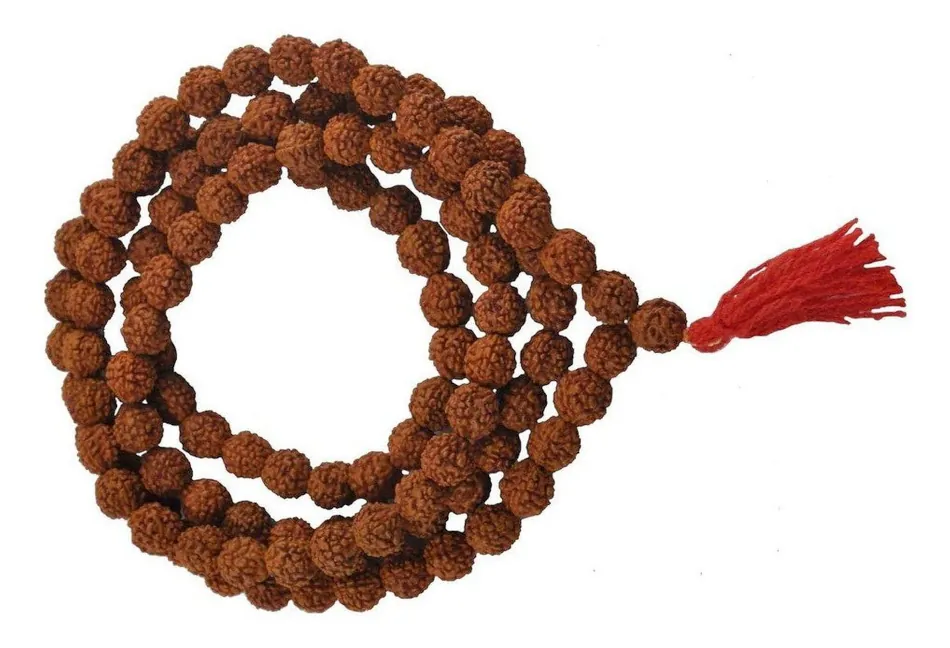
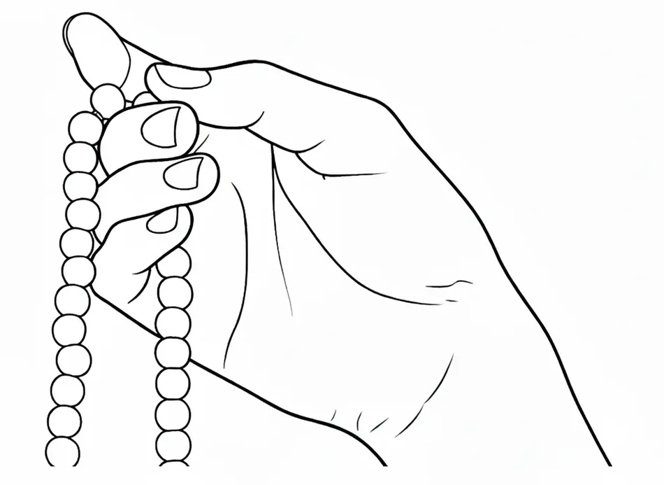

Мантры
práṇava japá - повторение AUMAUM íti eváṃ dhyā́yatha ātmā́nam
медитируй (созерцай) на атман как на AUM
(Мандукья упанишада)
чётки - mālā

- чётки - mā́lā
- нить - sū́tra
- бусина - ákṣa (глаз)
- бусины - rudrā́kṣa (зёрна)
- разделительная бусина - merú (гора)
- 108 счётных бусин
Левая рука

- выполняет чин-мудру
- указательный палец согнут в кольцо и касается основания большого пальца
- средний, безымянный пальцы и мизинец выпрямлены
- ладонь направлена вверх
- покоится на левом колене
Правая рука

- отсчитывает малу
- мала лежит на среднем пальце
- большой палец перемещает бусины
- рука находится на правом колене
- мала свисает с внутренней стороны ноги
Поза
- сидеть на стуле
- сидеть лицом на восток
- спина прямая
- слегка наклониться вперед
- ноги расставлены
- ступни параллельны
Голова
- на одной линии со спиной
- не наклонять
Глаза
- глаза закрыты
- глаза скрещены
- глаза смотрят на межбровье или на кончике носа
Язык
- Язык прижат к небу
Выполнение
- указательный палец не касается бусин
- большой палец тянет бусину по направлению к телу
- проговаривается AUM
- проговаривается три раздельных звука A, U, M
- разделительная бусина не пересекается
- после достижения разделительной бусины, развернуть малу